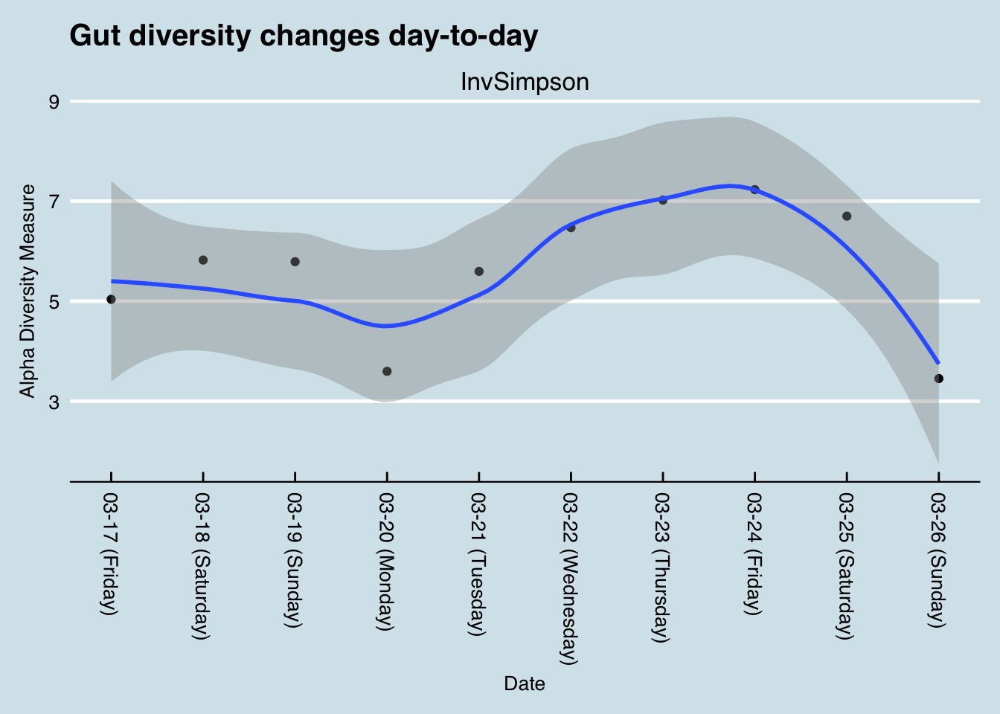
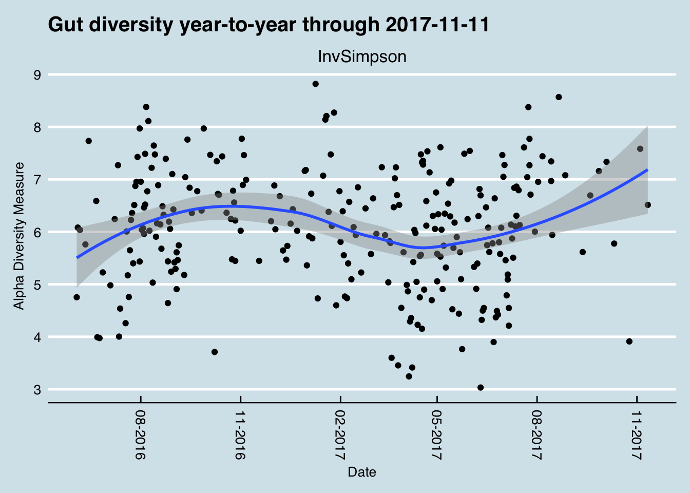
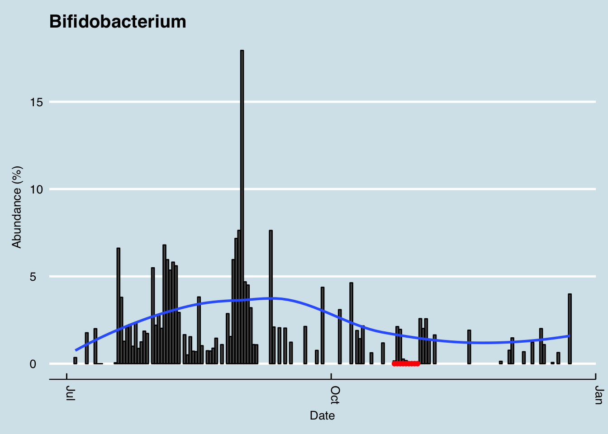

Chapter 1 Overview
1.1 Diversity
The general consensus is that diversity is good: a greater variety of microbes ensures more resillience against the daily threat of invaders. Many people, after taking just one test, often feel either reassured that their diversity is “good” or disappointed that it’s “bad”. But I find that day-to-day variability is great enough that it’s almost never useful to use a single result. For example, here’s my diversity during a typical week:

If I had only tested on Monday, I may have been disappointed with my 0.38 score. Wait another day or two and, with no significant changes in diet, I was up to 0.72 – before plunging to 0.37 by the weekend. Moral: don’t take a single result too seriously.
To get a sense of how much diversity can vary over a year:

Although the blue moving-average line shows apparent stability, there are many days that are far above and below the average. Yes, at various times during this period I was eating different types of food, often in a deliberate attempt to influence my microbiome, but believe me: that is not the reason for the wild changes up and down. I also studied the mathematics behind how diversity is measured, hoping to find something more “accurate”, but ultimately I concluded that, like many attempts to summarize the microbiome in a single number, the whole concept of diversity is a mirage. Everything depends.
Bifidobacterium is a key component of virtually all popular probiotic supplements, partly because it is so easy to manufacture, but also due to its proven association with sleep and other aspects of health. A six month picture of my levels shows some dramatic ups and downs1.

Incidentally, the red dots indicate days when I was taking a powerful probiotic supplement that contained Bifidobacterium. And that big spike in September? That was during a trip to New Orleans, when I ate a lot of red beans and rice. At least for me, food seems to work better than taking supplements.
Important note: in all of these charts, I don’t distinguish between a day when the tested abundance was zero, and a day when I have no reliable test results. Besides the daily variability in the microbiome, the test results themselves often come with wild differences in quality. This is nothing to complain about: the ability to see these microbes in the first place is a true miracle of technology, and even the most careful lab can’t get around the myriad of technical issues that come with such a complex process.↩